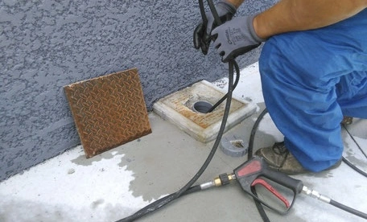
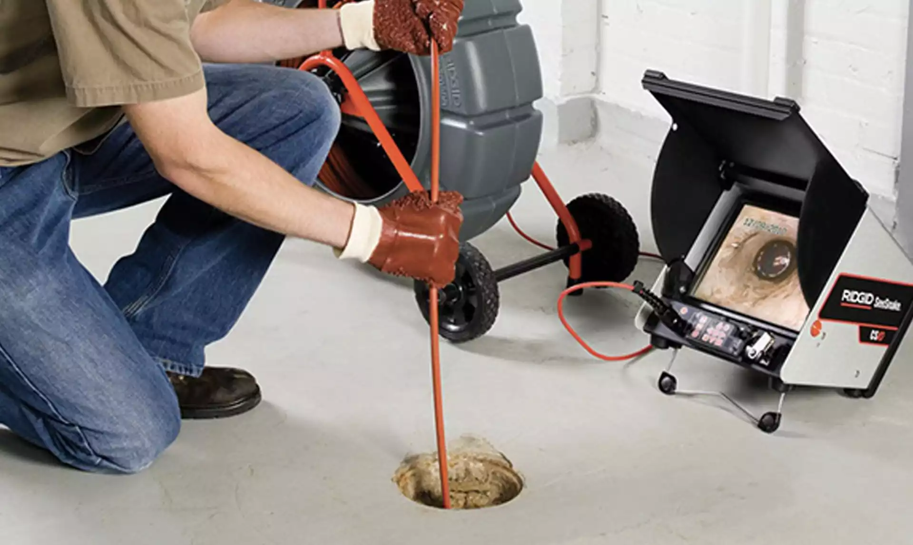
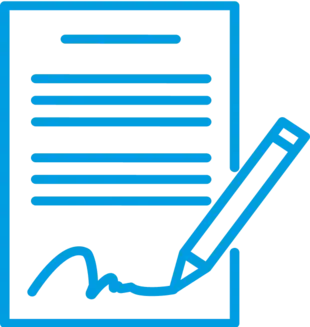

Débouchage canalisations : À Morangis, nous débouchons toutes vos canalisations, qu’elles soient bouchées par des résidus alimentaires, des racines ou des dépôts de graisse. Nos équipements haute pression et notre réactivité nous permettent de rétablir rapidement l’écoulement de vos réseaux, même en urgence.
Assainissement IDF
SERVICES


Camera canalisations : Grâce à notre service d’inspection par caméra canalisation à Morangis, nous détectons précisément les bouchons, fissures ou affaissements. Cette méthode non destructive permet d’intervenir uniquement là où c’est nécessaire.
Bacs à Graisse : Nous assurons à Morangis la vidange, le nettoyage et la maintenance de vos bacs à graisse. Indispensable pour éviter les engorgements, ce service s’adresse aussi bien aux particuliers qu’aux professionnels de la restauration.

EXPERTISE TECHNIQUE ET ÉQUIPEMENTS DE POINTE À MORANGIS
Pour toutes vos interventions en assainissement à Morangis, notre équipe met à votre service une flotte de véhicules spécialisés : camions d’aspiration, de curage, ainsi que des engins compacts pour les zones difficiles d’accès. Que ce soit pour le débouchage de canalisations, les inspections caméra, la gestion des bacs à graisse, nous assurons des prestations rapides, soignées et conformes aux normes en vigueur.
DES TARIFS ADAPTÉS À VOS BESOINS À MORANGIS
JUSTES ET TRANSPARENTS
Nos prestations à Morangis incluent la vidange de bacs à graisse, l’inspection vidéo de canalisations, le débouchage de réseaux. Nos prix sont étudiés pour vous garantir un service de qualité, au meilleur coût. Demandez votre devis gratuit et bénéficiez d’une intervention rapide et efficace dans le 91.
DEVIS GRATUITCHOISIR IDF ASSAINISSEMENT 91 À MORANGIS, C’EST FAIRE LE BON CHOIX
À Morangis, IDF Assainissement 91 est le partenaire de confiance pour tous vos besoins en assainissement. Notre équipe expérimentée intervient avec rigueur et réactivité, que ce soit pour un débouchage, un entretien de bac à graisse ou une inspection caméra. Nous mettons tout en œuvre pour vous offrir un service fiable et durable.
DES CONTRATS SUR MESURE POUR VOS INSTALLATIONS À MORANGIS

INTERVENTIONS PONCTUELLES OU RÉGULIÈRES
À Morangis, nos contrats d’entretien annuels ou ponctuels sont conçus pour garantir votre sérénité. Chaque intervention est détaillée avec précision : délais, tarifs et actions prévues. Nous assurons un suivi professionnel et transparent, que ce soit pour une urgence ou un entretien régulier.
TOUS LES SERVICES D’ASSAINISSEMENT RÉUNIS À MORANGIS
À Morangis, nous intervenons en urgence ou sur rendez-vous pour le débouchage de canalisations bouchées, qu’il s’agisse d’un évier, d’un WC ou d’un réseau complet. Nos équipements haute pression garantissent une remise en état rapide et sans dommages.
Pour détecter les anomalies sans casse, nous utilisons une caméra d’inspection qui nous permet de localiser précisément fuites, bouchons et détériorations. Ce diagnostic précis permet d’optimiser les interventions.
Nous assurons aussi la vidange et le nettoyage des bacs à graisse à Morangis pour les professionnels comme les particuliers, afin d’éviter les engorgements et maintenir des systèmes d’évacuation efficaces.
NOS VALEURS AU CŒUR DE NOS INTERVENTIONS À MORANGIS
QUALITÉ
PASSION DU MÉTIER
À Morangis, notre engagement pour la qualité se reflète dans chaque prestation. L’écoute et le respect du métier sont les piliers de notre réussite et de votre satisfaction.
PASSION
PLAISIR DE BIEN FAIRE
Chaque intervention est menée avec passion et soin. À Morangis, chaque projet est unique et mérite une attention sur-mesure, de la prise de contact à la finalisation.
ENGAGEMENT
RESPECT DES LIEUX
Nous travaillons dans le respect total de vos locaux à Morangis, avec la volonté de minimiser les perturbations et de livrer un chantier propre et terminé dans les temps.
CONFIANCE
RELATION SEREINE
Notre priorité à Morangis est de bâtir une relation de confiance. Nous conseillons nos clients avec transparence pour des décisions éclairées et sereines.